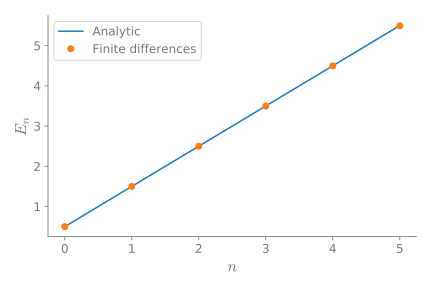

Finite differences in infinite domains
Finite differences in infinite domains
Because of my friend, Edward Villegas, I ended up thinking about using a change of variables when solving an eigenvalue problem with finite difference.
The problem
Let's say that we want to solve a differential equation over an infinite domain. A common case is to solve the Time independent Schrödinger equation subject to a potential \(V(x)\). For example
where we want to find the pairs of eigenvalues/eigenfunctions \((E_n, \psi_n(x))\).
What I normally do when using finite differences is to regularly divide the domain. Where I take a large enough domain, so the solution have decayed close to zero. What I do in this post is to make a change of variable to render the interval finite first and then regularly divide the transformed domain in finite intervals.
My usual approach
My usual approach is to approach the second derivative with a centered difference for the point \(x_i\) like this
with \(\Delta x\) the separation between points.
We can solve this in Python with the following snippet:
import numpy as np from scipy.sparse import diags from scipy.sparse.linalg import eigs def regular_FD(pot, npts=101, x_max=10, nvals=6): """ Find eigenvalues/eigenfunctions for Schrodinger equation for the given potential `pot` using finite differences """ x = np.linspace(-x_max, x_max, npts) dx = x[1] - x[0] D2 = diags([1, -2, 1], [-1, 0, 1], shape=(npts, npts))/dx**2 V = diags(pot(x)) H = -0.5*D2 + V vals, vecs = eigs(H, k=nvals, which="SM") return x, np.real(vals), vecs
Let's setup the plotting details.
# Jupyter notebook plotting setup & imports %matplotlib notebook import matplotlib.pyplot as plt gray = '#757575' plt.rcParams["figure.figsize"] = 6, 4 plt.rcParams["mathtext.fontset"] = "cm" plt.rcParams["text.color"] = gray fontsize = plt.rcParams["font.size"] = 12 plt.rcParams["xtick.color"] = gray plt.rcParams["ytick.color"] = gray plt.rcParams["axes.labelcolor"] = gray plt.rcParams["axes.edgecolor"] = gray plt.rcParams["axes.spines.right"] = False plt.rcParams["axes.spines.top"] = False
Let's consider the Quantum harmonic oscillator, that has as eigenvalues
Using the finite difference method we have values that are really close to the analytic ones.
x, vals, vecs = regular_FD(lambda x: 0.5*x**2, npts=201) vals
with output
array([0.4996873 , 1.49843574, 2.49593063, 3.49216962, 4.48715031,
5.4808703 ])
With the analytic ones
[0.5, 1.5, 2.5, 3.5, 4.5, 5.5])
If we plot these two, we obtain the following.
plt.figure() plt.plot(anal_vals) plt.plot(vals, "o") plt.xlabel(r"$n$", fontsize=16) plt.ylabel(r"$E_n$", fontsize=16) plt.legend(["Analytic", "Finite differences"]) plt.tight_layout();

Let's see the eigenfunctions.
plt.figure() plt.plot(x, np.abs(vecs[:, :3])**2) plt.xlim(-6, 6) plt.xlabel(r"$x$", fontsize=16) plt.ylabel(r"$|\psi_n(x)|^2$", fontsize=16) plt.yticks([]) plt.tight_layout();

One inconvenient with this method is the redundant sampling towards the extreme of the intervals, while under sample the middle part.
Changing the domain
Let's now consider the case where we transform the infinite domain to a finite one with a change of variable
with \(\xi \in (-1, 1)\). Two options for this transformation are:
\(\xi = \tanh x\); and
\(\xi = \frac{2}{\pi} \arctan x\).
Making this change of variable the equation we need to solve the following equation
The following snippet solve the eigenproblem for the mapped domain:
def mapped_FD(pot, fun, dxdxi, dxdxi2, npts=101, nvals=6, xi_tol=1e-6): """ Find eigenvalues/eigenfunctions for Schrodinger equation for the given potential `pot` using finite differences over a mapped domain on (-1, 1) """ xi = np.linspace(-1 + xi_tol, 1 - xi_tol, npts) x = fun(xi) dxi = xi[1] - xi[0] D2 = diags([1, -2, 1], [-1, 0, 1], shape=(npts, npts))/dxi**2 D1 = 0.5*diags([-1, 1], [-1, 1], shape=(npts, npts))/dxi V = diags(pot(x)) fac1 = diags(dxdxi(xi)**2) fac2 = diags(dxdxi2(xi)) H = -0.5*fac1.dot(D2) - 0.5*fac2.dot(D1) + V vals, vecs = eigs(H, k=nvals, which="SM") return x, np.real(vals), vecs
First transformation: \(\xi = \tanh(x)\)
Let's consider first the transformation
In this case
and
We need to define the functions
pot = lambda x: 0.5*x**2 fun = lambda xi: np.arctanh(xi) dxdxi = lambda xi: 1 - xi**2 dxdxi2 = lambda xi: -2*xi*(1 - xi**2)
and run the function
x, vals, vecs = mapped_FD(pot, fun, dxdxi, dxdxi2, npts=201) vals
And we obtain the following
array([0.49989989, 1.4984226 , 2.49003572, 3.46934257, 4.46935021,
5.59552989])
If we compare with the analytic values we get the following.
plt.figure() plt.plot(anal_vals) plt.plot(vals, "o") plt.legend(["Analytic", "Finite differences"]) plt.xlabel(r"$n$", fontsize=16) plt.ylabel(r"$E_n$", fontsize=16) plt.tight_layout();

And the following are the eigenfunctions.
plt.figure() plt.plot(x, np.abs(vecs[:, :3])**2) plt.xlim(-6, 6) plt.xlabel(r"$x$", fontsize=16) plt.ylabel(r"$|\psi_n(x)|^2$", fontsize=16) plt.yticks([]) plt.tight_layout();

Second transformation: \(\xi = \frac{2}{\pi}\mathrm{atan}(x)\)
Let's consider first the transformation
In this case
and
Once, again, we define the functions.
pot = lambda x: 0.5*x**2 fun = lambda xi: np.tan(0.5*np.pi*xi) dxdxi = lambda xi: 2/np.pi * np.cos(0.5*np.pi*xi)**2 dxdxi2 = lambda xi: -4/np.pi * np.cos(0.5*np.pi*xi)**4 * np.tan(0.5*np.pi*xi)
and run the function
x, vals, vecs = mapped_FD(pot, fun, dxdxi, dxdxi2, npts=201) vals
to obtain the following eigenvalues
array([0.49997815, 1.49979632, 2.49930872, 3.49824697, 4.49627555,
5.49295665])
with this plot
plt.figure() plt.plot(anal_vals) plt.plot(vals, "o") plt.legend(["Analytic", "Finite differences"]) plt.xlabel(r"$n$", fontsize=16) plt.ylabel(r"$E_n$", fontsize=16) plt.tight_layout();
and the following eigenfunctions.
plt.figure() plt.plot(x, np.abs(vecs[:, :3])**2) plt.xlabel(r"$x$", fontsize=16) plt.ylabel(r"$|\psi|^2$", fontsize=16) plt.xlim(-6, 6) plt.xlabel(r"$x$", fontsize=16) plt.ylabel(r"$|\psi_n(x)|^2$", fontsize=16) plt.yticks([]) plt.tight_layout();

Conclusion
The method works fine, although the differential equation is more convoluted due to the change of variable. Although there are more elegant methods to consider infinite domains, this is simple enough to be solved in 10 lines of code.
We can see that the mapping \(\xi = \mathrm{atan}(x)\), covers better the domain than \(\xi = \tanh(x)\), where most of the points are placed in the center of the interval.
Thanks for reading!
This post was written in the Jupyter notebook. You can download this notebook, or see a static view on nbviewer.


{kind=link}